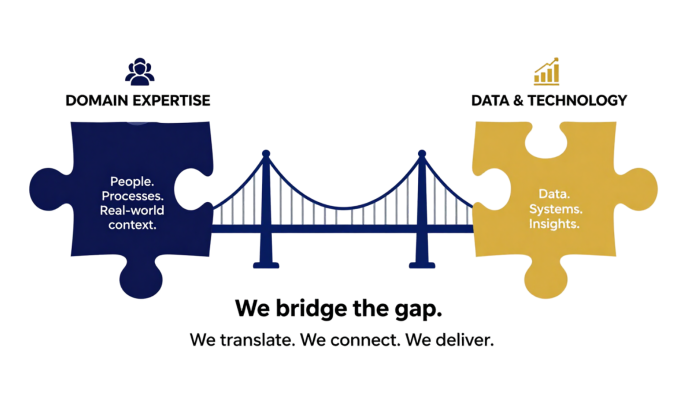

Healthcare
NHS organisations, primary care, community services, integrated care systems and healthcare providers.
Binary Findings exists to bridge the gap between domain expertise and data & technology, turning complexity into clarity and insight into action.
We combine real-world operational experience with modern data capability, helping organisations translate business challenges into practical, measurable solutions.
We don't just analyse data, we understand the environment it comes from.

We understand real-world challenges because we've lived them, in both the operational domain and the data world.

Bridging Expertise
& Technology
While health data remains our specialism, our methods and technical expertise help organisations across multiple sectors.
NHS organisations, primary care, community services, integrated care systems and healthcare providers.

Universities, research groups and grant-funded projects requiring robust data management and analysis.
Local authorities, charities and public organisations delivering evidence-based services.
Consultancy, quality improvement and advisory services seeking better use of data.
Small and growing organisations wanting practical reporting, automation and operational insight.
After more than thirteen years working across healthcare, quality improvement and research, I repeatedly saw the same challenge: talented people with deep expertise struggling to unlock the full value of their data.
I founded Binary Findings to bridge that gap. Combining domain knowledge with modern data engineering and analytics enables organisations to make confident, evidence-based decisions without losing sight of the people behind the data.
My aim is simple, to help organisations transform information into meaningful insight, practical action and measurable impact.
The principles that guide every project, partnership and decision.
To bridge the gap between specialist expertise and modern data capability, helping organisations make better decisions through meaningful insight.
A future where organisations confidently use data to improve services, outcomes and the lives of the people they support.
We will always seek to understand your world before proposing solutions, delivering work that is practical, transparent and focused on measurable impact.
Whether you're exploring an idea, planning a project or simply want to discuss your data challenges, we'd be delighted to hear from you.